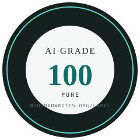

A number on a piece of work: how much of it came through a signed machine channel. Petrol pumps show an octane number, gold is stamped with its purity, and this label works the same way. Anyone with the public key can recompute the grade, and every part that did not come through the channel is listed beside it. The key proves the channel, not the author.

The seal is generated with the number on its face, by the tool, on the day of the check. This one is the grade the label/ directory earned. Free to display on anything that passes; forbidden on anything that does not.
| Grade | Band | Meaning |
|---|---|---|
| 100 | Pure | Every line, paragraph, verse or bar sits in a signed machine hunk that still matches. Nothing typed by hand after the machine finished, nothing through an unlogged channel. |
| 90–99 | High | The machine channel produced the work. The rest, at most one unit in ten, is listed by location in the linked report. |
| 50–89 | Mixed | Most of the work came through the channel and a large minority did not. The seal says "Mixed" on its face. |
| 0–49 | no label | Most of the work did not come through a signed channel. The report is still printed; the seal is refused. |
The grade is rounded down, so 99.6 % is grade 99. The lines have reasons. 100 is exact. 90 is Not By AI's "90 % rule" pointed the other way: they ask a creator to estimate at least 90 % human, we count at least 90 % through the channel. 50 is where the sentence "a machine channel produced this work" stops being true.
It does not guarantee quality, correctness or safety. It does not guarantee authorship: "write exactly these lines", or an agent copying a hand-written file back into place, yields an attested hunk. It does not claim the absence of human judgement, which sits in the prompt and the review and is not made of bytes. And it is not anonymity: the ledger records a key fingerprint, never a name, but on a small team a key identifies a person by elimination, so reports aggregate per repository. A seal names the path it covers; one that does not is invalid.
Level 1, self-signed (shipped): the author's machine key signs each hunk through the harness hook; the verifier uses their own trust root, never the repository's. Level 2, anchored (designed, not built): the ledger head recorded in a public transparency log at each commit, so a deleted record leaves a visible gap. Anchoring makes the history tamper-evident; it does not make a false record true, and a key-holder can still sign anything. Taking the key-holder out of the loop needs a trusted executor outside the writer's reach, a third design the paper's §10.3 describes and nobody ships yet.
python3 nohumanwrites.py setup # once: hook + dedicated key # ... work with the agent inside the repository ... python3 nohumanwrites.py check <path> --label # grade, band, dated badge, wording python3 nohumanwrites.py check <path> --label --seal g.svg # plus the numbered seal AI Grade 100 · Pure · 98 of 98 units attested · checked 2026-09-06 · Level 1 (self-signed) seal written: label/ai-grade.svg (signed into the ledger)
Refused, with the reason printed, when there is no signed ledger, when the evidence is unsigned transcripts, when the trust root is the repository's own keys, and below grade 50. A label with no ledger behind it is the kind of mark this one exists to replace.
Writing that comes through a logged machine channel arrives with a prompt, a diff, a log, a test run and a signature. Writing through any other channel arrives with none of those. Google's CEO said in October 2024 that "more than a quarter of all new code at Google is generated by AI, then reviewed and accepted by engineers"; a report in April 2026 put the figure at three quarters. The grade is the one per-unit record of that division a third party can check. It is a coverage statistic of logged channels. It is not a measure of autonomy, of capability or of the approach to general intelligence; an earlier draft that called a registry of such numbers a "thermometer" of that approach was wrong, eight external reviewers said so, and the white paper now says what a real study of delegation would need instead. The evidence, the counter-evidence and the eleven ways the grade can be gamed are in the paper, which is written to be read by anyone.
White paper: AI Grade: a number for how much of a work came through a signed machine channel · Spec and terms of use
The NoHumanWrites repository, checked on 6 September 2026, is grade 13: most of its prose reached the disk through shell heredocs, which the hook does not see. It earns no label. The label/ directory, written through the signed channel on purpose, is grade 100, Pure. v0.1 of the paper scored 99 after a one-line edit inside a table, and every version since has been a full rewrite through the signed channel, which is rewrite laundering by the paper's own §7, done in the open. Command, output, key fingerprint and tag are in §8 so anyone with the public key can rerun it.